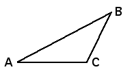

| The triangle inequality for the Hausdorff distance is |
| h(A,B) ≤ h(A,C) + h(C,B) |
| for all compact sets A, B, and C. |
| The name comes from the familiar observation about Euclidean distances and the lengths of sides of triangles: |
| dist(A,B) ≤ dist(A,C) + dist(C,B) |
|  |
| First, note the Lemma
|
| Write |
| From |
| From |
| A similar argument shows |
| From |
Return to Hausdorff distance.